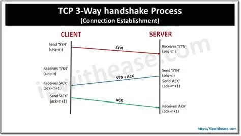
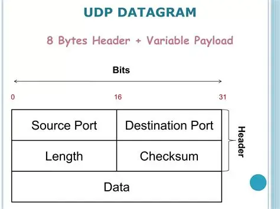

1. Función de la Capa de Transporte (Capa 4)
La Capa de Transporte es responsable de la **comunicación de extremo a extremo**. Define cómo se segmentan los datos y cómo se reensamblan en el destino. En esta capa operan los dos protocolos fundamentales de Internet: TCP y UDP.
2. TCP (Transmission Control Protocol): El Confiable
TCP es un protocolo **orientado a la conexión** y **confiable**. Antes de enviar cualquier dato, establece una sesión asegurándose de que el destinatario esté listo. Si un segmento se pierde, se retransmite.
Características
- **Conexión:** Establece el **Three-Way Handshake** (apretón de manos de tres vías).
- **Confianza:** Garantiza la entrega de datos y la ordenación correcta.
- **Control de Flujo:** Asegura que el emisor no sature al receptor.
- **Uso Típico:** Navegación Web (**HTTP/HTTPS**), Correo Electrónico (**SMTP, POP3, IMAP**), Transferencia de Archivos (**FTP**).
El Three-Way Handshake
Es el proceso de establecimiento de conexión: 1. **SYN** (Sincronizar) enviado; 2. **SYN-ACK** (Sincronizar-Aceptar) recibido; 3. **ACK** (Aceptar) enviado. Solo después de esto, los datos viajan.

3. UDP (User Datagram Protocol): El Rápido
UDP es un protocolo **sin conexión** y **no confiable** (best-effort). Simplemente envía los datos (Datagramas) sin verificar si el receptor los recibió. Es mucho más rápido que TCP, ya que no tiene el overhead de la gestión de errores y conexiones.
Características
- **Conexión:** No establece conexión previa (no hay Handshake).
- **Confianza:** No garantiza la entrega ni el orden.
- **Velocidad:** Es ideal para aplicaciones sensibles al tiempo.
- **Uso Típico:** Transmisión de Video/Voz en Tiempo Real (**VoIP**), Videojuegos Online, Consultas de Dominio (**DNS**), SNMP.

Práctica con Puertos: El Punto Final de la Comunicación
Tanto TCP como UDP usan **Puertos** (números del 0 al 65535) para identificar el proceso o aplicación específica en el host que debe recibir el dato. El puerto es esencial para que un paquete HTTP no termine en tu cliente de correo.
Tarea Práctica (Memorización de Puertos):
- ¿Qué puerto usa el protocolo de navegación web segura **HTTPS**?
- ¿Qué puerto usa el protocolo de transferencia de archivos **FTP** (control)?
- ¿Qué puerto usa el protocolo de resolución de nombres **DNS**?